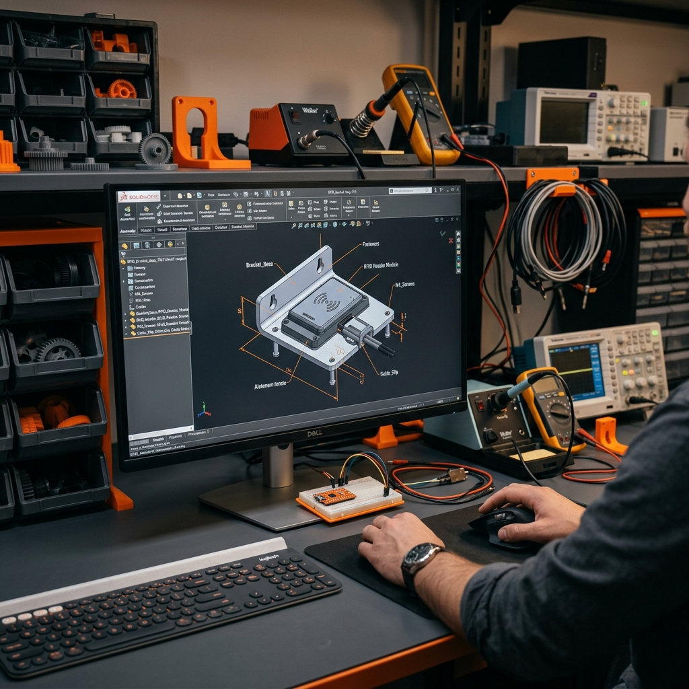

SHANAY AMBANI // DESIGN
Senior Mechatronics Engineering Technology student at Purdue University. Translating engineering theory into high-fidelity CAD, robust structural prototypes, and manufacturable designs.
ABOUT ME
Senior at Purdue University pursuing a B.S. in Mechatronics Engineering Technology (Expected May 2026). I specialize in CAD modeling, physical prototyping, and mechatronic control system integration.
My academic foundation spans Mechanics & Materials, Automated Controls, Digital Electronics, and Design for Manufacturability (DFM). I thrive at the intersection of mechanical structures and electrical hardware—concepting, detailing, analyzing, and assembling physical prototypes.
TECHNICAL SKILLS
CAD, SOFTWARE & DESIGN
ANALYSIS
MANUFACTURING
EXPERIENCE
D&O Motorsports | Design Engineering Intern
May 2025 - Aug 2025- Reduced aerodynamic drag by 4% by redesigning a Honda City bumper using SolidWorks and validating performance with CFD analysis (ANSYS Fluent).
- Converted physical scan data of components into fully editable, surface-reconstructed CAD models.
- Designed, 3D printed, and hand-fabricated aerodynamics prototype parts matching a tight ±0.5 mm geometry tolerance limit.
- Evaluated structural stability and ease of installation through physical wind tunnel and road test feedback.
SolidWorks (Surfacing & Part Modeling), ANSYS Fluent (CFD), Creality FDM 3D Printers, 3D Scan FaroArm, Dial Calipers, Vernier Gauges.
I reshaped the front bumper of a test car to guide air more cleanly around the front wheels. This reduces wind resistance (drag), meaning the car uses less fuel to travel at high speeds. I scanned the original car shape, drew up the new design, printed test models, and checked they fit perfectly on the real vehicle.
L.I.M.E (Launchpad for Indian Motorsport Engineers) | Fellow and Intern
May 2024 - Aug 2024- Completed an intensive 80-hour motorsport engineering cohort focusing on CAD geometry, mechanical linkages, and vehicle handling setups.
- Selected as one of 70 fellows nationally based on mechanical design tests and geometric reasoning.
- Increased CAD model capture accuracy by 10% by applying mesh-alignment routines during automotive surface reverse engineering.
- Analyzed suspension link kinematics and optimized bracket geometry to accommodate standard hardware constraints.
SolidWorks (Assembly & Motion Study), Autodesk Inventor, 3D Mesh Cleanup (Geomagic), Vernier Hand Tools, Suspension Kinematics Spreadsheets.
I participated in a selective training program where I learned how race cars are modeled and built. I practiced taking physical metal parts, measuring them precisely with hand tools, and building matching 3D models on the computer, ensuring parts wouldn't run into each other when the suspension moves up and down.
PROJECTS
Senior Design Capstone (Purdue University) | Mechanical Design Lead
- Conceptualized and modeled an adjustable RFID platform bracket assembly achieving a 21 ft scanning detection envelope.
- Developed multi-view engineering drawings specifying ANSI tolerancing (GD&T) to guide sheet metal fabrication and structural welding.
- Validated structural integrity under a severe 8.7 lb-ft system torque and 30 mph outdoor wind gust load using SolidWorks Simulation (FEA).
- Optimized mounting stiffness to reduce system mechanical vibration deflection by 18%.
SolidWorks (Structural Weldments & Sheet Metal), SolidWorks Simulation (Linear Static FEA), ANSI Y14.5 GD&T Standards, CNC Plasma Cutter, TIG Welder.
I designed a heavy-duty metal bracket to hold a wireless scanner (RFID) high off the ground. Because it sits outside, I used computer modeling to make sure strong wind gusts won't bend the metal or cause the scanner to shake too much, which would disrupt tracking. I then created the assembly plans for the shop to cut, fold, and weld the steel parts together.
Skoda Superb Rear Spoiler Concept | Shadow Intern
- Assisted in designing a rear spoiler and air diffuser profile to increase high-speed downforce and vehicle stability.
- Constructed streamlined aerodynamic CAD profiles and evaluated air pressure drag coefficients using CFD fluid models.
- Applied optimized airfoil parameters to a conceptual front bumper splitter kit for downforce balancing.
SolidWorks (Complex loft curves), ANSYS CFX (Computational Fluid Dynamics), Flow Trajectory Visualization, Airfoil Parameter Solvers.
I modeled a rear wing and bumper attachment for a passenger car. I simulated air blowing past the car at highway speeds to make sure the wing pushes the back of the car down slightly (creating downforce) to help it stick to the road better around corners, without adding too much extra air resistance which would hurt fuel economy.
Formula SAE Selection Project (Chain Drive System) | Purdue University
- Designed custom sprocket profiles and a mounting plate for a chain drive transmission system in SolidWorks.
- Performed a detailed tolerance stack-up analysis to ensure drive gear alignment within critical limits.
- Generated dimensioned shop-ready orthographic sheets detailing bore tolerances and component clearances.
SolidWorks (Equations-driven sprocket profile, Assemblies), ASME standard drawings, Tolerance stack-up calculations (worst-case math).
I designed the chain-and-gear system that transfers power to a small race car's rear wheels. Since even a tiny misalignment can cause the chain to snap or slip off, I calculated the maximum amount each metal part could be off-size and still align perfectly, drawing up detailed blueprints for fabrication.
CAD GALLERY

RFID Antenna Mount & Structural Stand
This layout shows the ongoing Capstone assembly. The design consists of lightweight structural 8020 aluminum extrusions supporting a custom-bent steel mounting bracket. TIG-welded structural plates are placed at stress concentrations (joints) to handle torque from outdoor wind loads. The bracket features circular slot patterns allowing dual-axis angle adjustments for maximum signal propagation.
1. Final Prototype Assembly
Fully assembled mechanical test stand. Combines aluminum extrusion framing, base anchoring, and sensor adapter bracketry.
2. Capstone Mounting Bracket
Custom-bent steel mounting plate featuring slotted holes for sensor alignment adjustments and bolt-pattern integration.
3. Pivot Joint Hinge
Mechanical hinge bracket supporting multi-degree angular movement of capstone sensor mounts.
4. Aerodynamic Front Splitter
Aerodynamic bumper splitter surface, reconstructed from laser scan points, to reduce air turbulence underneath the vehicle.
PEER REVIEW
Shanay was a key driver of our team's success. Serving as our Mechanical Design Lead, he consistently brought a strong combination of technical skill and practical engineering judgment. He didn't just design components, he made sure every decision accounted for real-world conditions like wind loads, durability, cost, and ease of deployment. His ability to think beyond theory and focus on how the system would actually perform in a race-day environment made a huge difference.
One thing that stood out was how intentional he was with design optimization. Whether it was refining the antenna positioning for better coverage or reworking the structure to improve stability while reducing material usage, his decisions were always backed by solid analysis and clear reasoning.